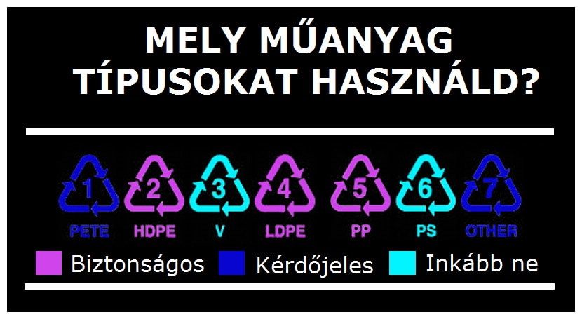

Miről szól az újrahasznosítás?
A műanyag újrahasznosítása azt jelenti, hogy az elhasznált műanyagot visszanyerik és újra feldolgozzák hasznos termékekké. Az újrahasznosítás segít csökkenteni az eltávolítandó hulladék mennyiségét és megóvni a környezetet.
Az újrahasznosítás arra az elvre épül, hogy a hulladékanyagokat nem kell mindig újra előállítani az eredeti nyersanyagokból, hanem azokat újrahasznosítva a már meglévő anyagokból lehet létrehozni más termékeket. Az újrahasznosítás lényege, hogy az anyagokat újra feldolgozzuk, hogy a lehető legkevesebb anyagot kelljen kidobni, ami jelentős környezeti előnyökkel jár.
Az újrahasznosítás a környezetvédelem fontos eleme, mivel a megfelelően újrahasznosított hulladékanyagok visszakerülnek a gazdaságba és csökkentik az újabb nyersanyagok előállítására való igényt. Emellett az újrahasznosítás segít csökkenteni a szemétlerakók terhelését és csökkenti a szennyezést, amely az új anyagok előállítása során keletkezik.
Műanyag típusok
Számos különböző műanyag típus létezik, mindegyiknek megvan a saját tulajdonsága és jellemzője. Néhány típus gyakrabban újrahasznosítható, mint mások. Íme néhány példa:
- Polietilén (PE)
- Polipropilén (PP)
- Polivinil-klorid (PVC)
- Polisztirol (PS)
- Poliuretán (PUR)
- Polikarbonát (PC)
- Akrilnitril-butadién-sztirol (ABS)
általában lágy, rugalmas műanyag, amelyet a számos kis hólyag alkot. Felhasználása: zacskók, fóliák, palackok.
általában keményebb műanyag, mint a polietilén, és magasabb hőmérsékleten sem olvad meg. Felhasználása: élelmiszer tárolóedények, flakonok, szőnyegek.
kemény és rugalmas, de a lágyítószerek miatt problémás a környezet szempontjából. Felhasználása: csövek, szigetelőanyagok, ablakok.
könnyű, merev, üvegszerűen átlátszó anyag. Felhasználása: ételkonténerek, tálak, poharak, habbetét.
kemény és rugalmas habanyag, amelynek sok különböző típusa van. Felhasználása: szigetelőanyagok, bútorpárnázatok, futóművek, ragasztóanyagok.
kemény, átlátszó műanyag. Felhasználása: üvegek, szemüveglencsék, biztonsági pajzsok, CD-k és DVD-k.
kemény, ütésálló műanyag. Felhasználása: játékok, autóalkatrészek, távirányítós eszközök.
Fontos megjegyezni, hogy a fenti fajták különböző adalékokkal és lágyítószerekkel kombinálva változatos tulajdonságokat mutathatnak, és ezek hatással lehetnek az újrahasznosításukra is.
A műanyag hulladék problémája

A műanyaghulladék jelentős környezeti problémát jelent, amely negatív hatással van az ökoszisztémákra és az emberi egészségre is. Íme néhány tény és adat a műanyaghulladékkal kapcsolatban:
A műanyag hulladék problémája az, hogy a műanyagok nagyon lassan bomlanak le, és nagyon sokáig megmaradnak a környezetben. Ez azt jelenti, hogy a műanyag hulladékok felhalmozódnak az élővilágra káros hatást kifejtve, beleértve a tengeri állatokat is. Az emberek által eldobott műanyag hulladék nagy mennyiségben kerül a világ óceánjaiba, és az idővel összezsugorodik és mikroműanyagokká változik.
A mikroműanyagok károsak az élővilágra, mert bejutnak az élelmiszerláncba, és az állatok táplálékként fogyasztják őket. A műanyagok a tengerekben összeállnak, és a mikroműanyagoktól a plasztik szigetekig terjedő nagyobb hulladékszigeteket hoznak létre, amelyek környezeti katasztrófákat okoznak.
Emellett az újrahasznosítási folyamatok korlátozottak, és a műanyagokat gyakran egyszer használatos termékként használják, ami növeli a műanyag hulladék mennyiségét. A műanyagokat gyakran égetik vagy lerakják a szemétlerakókban, ami káros anyagokat bocsát ki a levegőbe és a talajba.
Összességében, a műanyag hulladék problémája komoly környezeti és egészségügyi kockázatot jelent, és megoldásokat kell találni a probléma kezelésére és csökkentésére.
Az újrahasznosítás előnyei
- Környezetvédelem: Az újrahasznosítás segít csökkenteni a szemét mennyiségét és a talaj, víz és levegő szennyezését. Az újrahasznosításnak köszönhetően kevesebb szemét kerül a szemétlerakókba, amelyek káros anyagokat bocsátanak ki a környezetbe, és csökkentik az erőforrásokra gyakorolt nyomást.
- Energia megtakarítás: Az újrahasznosítás segít megtakarítani az energiát, mert a hulladékok újrafeldolgozásához kevesebb energia szükséges, mint az eredeti anyag előállításához. Az újrahasznosítás segítségével csökkenthető az erőforrásokból történő anyaggyártás és a hozzájuk kapcsolódó energiafelhasználás.
- Gazdasági előnyök: Az újrahasznosítás elősegíti a helyi gazdaságokat, mivel lehetővé teszi az újrahasznosított anyagok előállítását és új termékek létrehozását. Az újrahasznosítás gazdasági előnyei közé tartozik a munkahelyteremtés, az anyagköltségek csökkentése és a versenyképesség növelése.
- Társadalmi előnyök: Az újrahasznosítás pozitív hatással van a társadalomra is, mert az újrahasznosítási programok segítik az embereket abban, hogy környezettudatosabbak legyenek, és csökkentsék a szemét mennyiségét. Az újrahasznosítás hozzájárulhat az oktatáshoz és a tudatosság növeléséhez is.
- Fenntarthatóság: Az újrahasznosítás elősegíti a fenntartható fejlődést, mert lehetővé teszi a természeti erőforrások megőrzését és az erőforrások fenntartható használatát. Az újrahasznosítás révén csökkenthető az erőforrásokból történő anyaggyártás és a hulladék mennyisége, ami hozzájárul a fenntartható jövőhöz.
Hogyan újrahasznosítsunk?
- Válasszuk a megfelelő újrahasznosítási lehetőséget: A műanyag hulladékokat különböző típusokba sorolják, ezért először ismernünk kell az adott anyag típusát. Ezután meg kell találnunk a helyi újrahasznosítási lehetőségeket, és az adott anyagokat a megfelelő helyen elhelyezni.
- Csökkentsük a hulladékok mennyiségét: Az újrahasznosítás előtti legjobb módja a hulladékmennyiség csökkentése. Kerüljük a felesleges csomagolóanyagokat, használjunk újrahasználható termékeket, vásároljunk nagyobb csomagolásokat, hogy kevesebb műanyagot használjunk.
- Tisztítsuk meg az újrahasznosítandó anyagokat: Az újrahasznosításhoz gyakran szükséges, hogy az adott anyagokat tisztán tartsuk, eltávolítva minden szennyeződést, például élelmiszermaradékot, ragasztót vagy címkéket.
- Újrahasználjuk az anyagokat: Ha lehetséges, használjuk újra a műanyagokat a meglévő funkciójukban. Például a műanyag zacskókat újrahasználhatjuk, hogy otthonunkban a hulladékot tároljuk, vagy kreatív projektekben felhasználjuk őket.
- Adjunk új életet az anyagoknak: Az újrahasznosított anyagokból sokféle terméket készíthetünk, például újrahasznosított papírt, műanyag palackokból készült ruhákat vagy bútorokat. Az újrahasznosított anyagok felhasználása kreatív és érdekes lehetőségeket kínál.
- Támogassuk az újrahasznosítást: Az újrahasznosítás népszerűsítése fontos a társadalmi tudatosság növelése érdekében. Támogassuk az újrahasznosítási programokat, és osszuk meg tapasztalatainkat másokkal, hogy segítsük az embereket abban, hogy tudatosabbak legyenek a környezetvédelem területén.